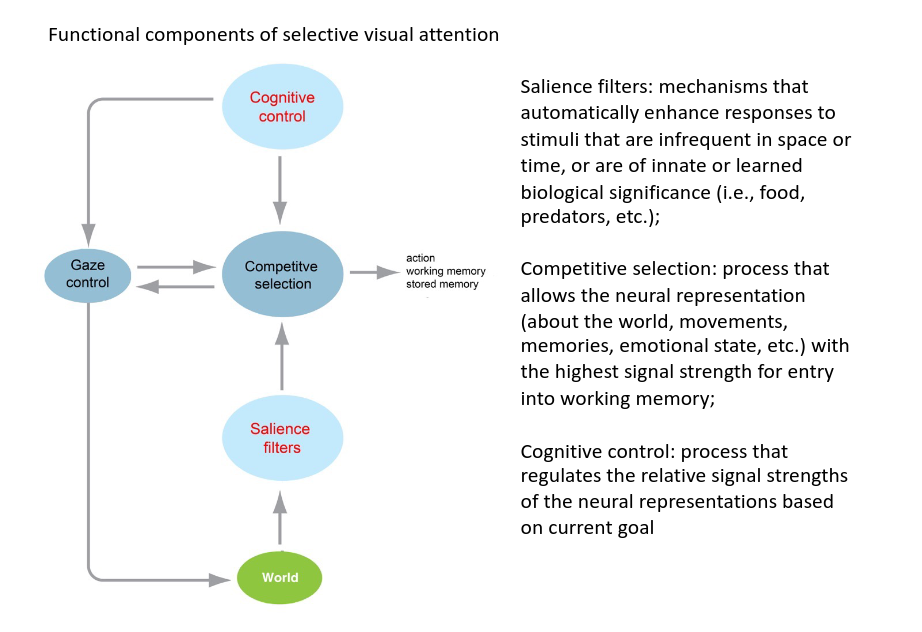
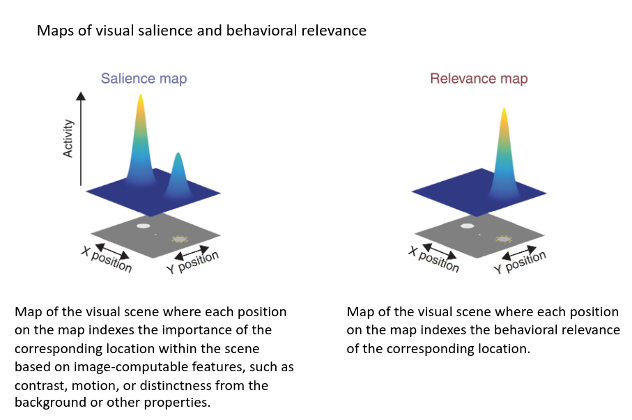
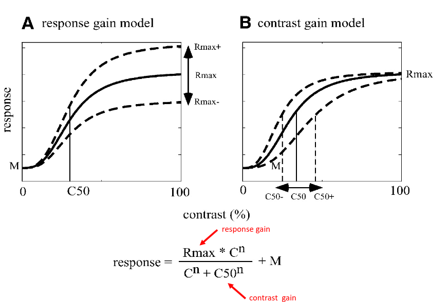
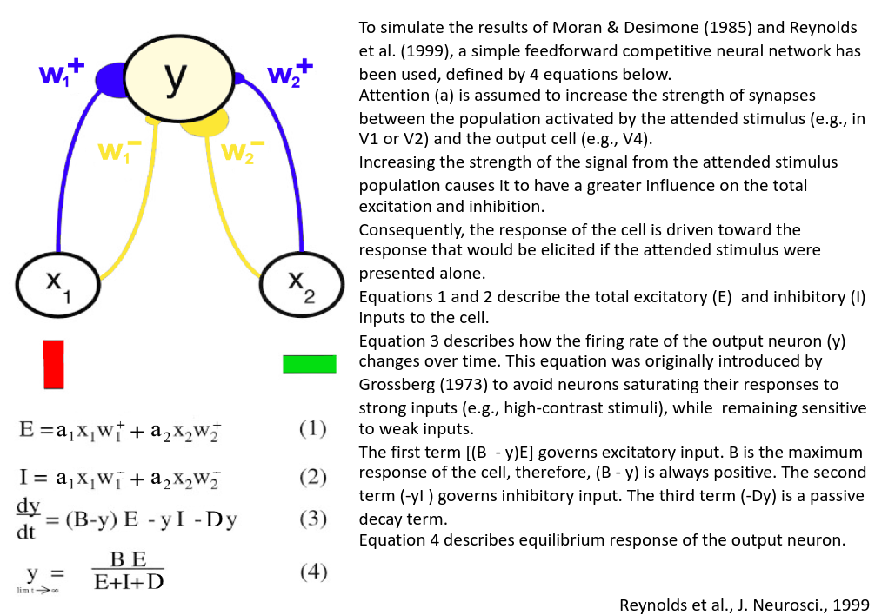
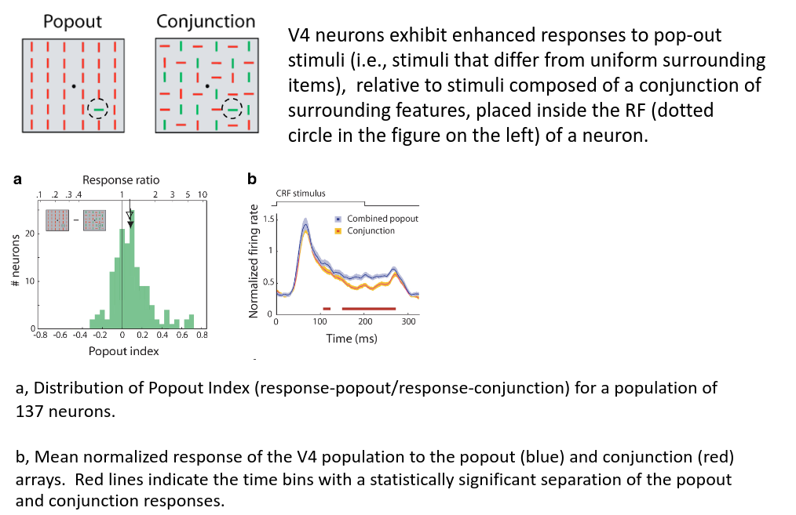

Attention
It is among the most fundamental of cognitive functions, particularly in humans and other primates for whom vision is the dominant sense. Selective visual attention describes the tendency of visual processing to be confined largely to stimuli that are relevant to behavior.
Biased competition model of selective visual attention
We can process only a small amount of information at any given time, therefore, our brain must select what stimuli consider and what stimuli avoid. Attended stimuli make demands on processing capacity, while unattended ones often do not.

Types of visual selective attention
- Top-down vs. Bottom-up
- Space based vs. Object based
- Covert vs. Overt orienting
Top-down
Selective processing due to an endogenously generated signal. Top-down attention can be engaged to select one object over another, as well as to follow a particular instructional set or general rule
Bottom-up
selective processing that is generated externally by the physical properties of stimuli. Exogenous attention allows novel or salient information to transiently interrupt goal-directed behavior.

Contrast can also influence the response of neurons. Two alternatives hypotheses to explain the effect of attention on the neuron response to a stimulus inside its RF:
- Response gain model: attention has a multiplicative effect on the neuronal response. The response is multiplied by a constant factor, and the effect of attention is maximum for the highest stimulus contrasts. The result is that the CRF function moves upward.
- Contrast (sensitivity) gain model: attention increases sensitivity to contrast. The effect of attention is maximum in the area of the curve where the neuronal response is most dynamic (steep). The result is that the sigmoid curve shifts to the left

Attention alters visual cortical receptive fields
Vision is limited by many factors including the visual system’s spatial resolution (or acuity), the ability to discriminate two nearby points in space. This shift in spatial attention results in enhanced visual processing, including enhanced spatial resolution, contrast sensitivity, and speed of information processing, at the attended location.

It is crucial to understand the way information is encoded in populations of neurons:
- If the noise in individual neurons is independent, averaging the responses of many neurons will lead to a very accurate estimate of the mean, no matter how noisy the individual neurons are.
- If, however, there are positive correlations in the trial-to-trial fluctuations of the responses of pairs of neurons, then the shared (or correlated) variability can never be averaged out, leading to a more variable (and less accurate) estimate of the mean activity in the population
- Attention increased V4 neuron firing rates
- Attention reduced the trial-to-trial variability of individual neurons
- Attention decreased noise correlation, that is the correlation between the variability or fluctuation of the responses of pairs of neurons, in each trial. It represents how much variability (or noise) is shared by a group of neurons.
- For pairs of neurons in the same hemisphere, correlation was lower when the stimulus in the neurons’ RF was attended (black line) than when it was unattended (gray line). Pairs of neurons in opposite hemispheres (dashed lines) had correlations that were close to zero.
- Noise correlation was highest for neurons with similar tuning (positive signal correlation) and lowest for neurons with opposite tuning (negative signal correlation). However, the effect of attention on noise correlation did not depend on the degree of tuning similarity (signal correlation) between cells.
Neurons at the earliest stages of visual processing are tuned to simple visual features such as luminance and color contrast, edge orientation, direction of motion, or stereo disparity. Processing becomes increasingly more specialized with the progression from low-level to high level visual areas, such that higher-level visual areas include neurons that respond only to terminations, corners or junctions, shape-from-shading cues, illusory contours, or views of specific real-world objects.

Overt vs. Convert attention
Gaze direction and the attention focus are often spatially aligned (i.e., overt attention). Nonetheless, it is also possible to attend to objects of interest in the visual scene without shifting our gaze (i.e., covert attention). Covert attention is the form of spatial attention most often studied in vision neuroscience.